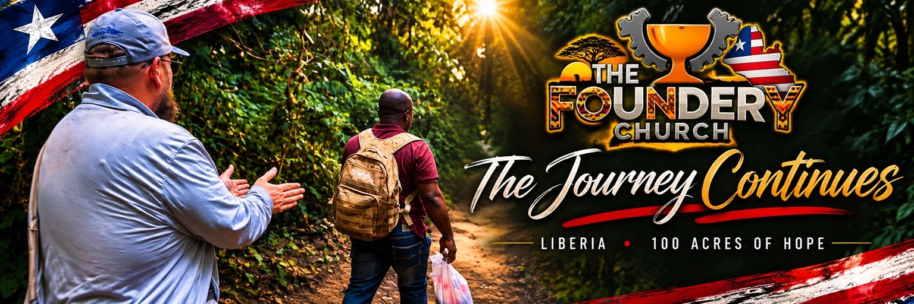

THE MESSAGE
Give Me Ears to Hear
John 8:1–11
Loading original sermon study…
Three messages. One journey of faith. Explore three messages from Pastor Bobby, alongside stories and Scripture readings from Liberia.
John 8:1–11
Loading original sermon study…

Explore 100 Acres of Hope →The trip may be over, but the relationships and work continue. Meet the people and churches we visited, follow the documentary, and see how you can be part of what comes next.
Explore the mission →